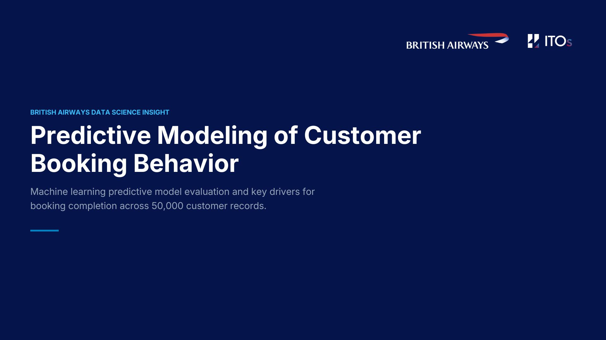
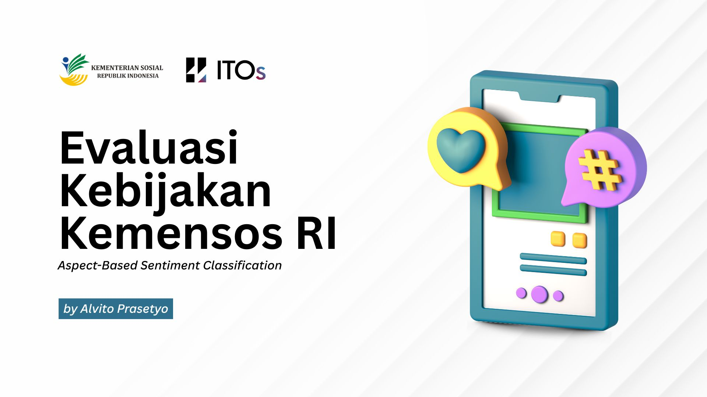
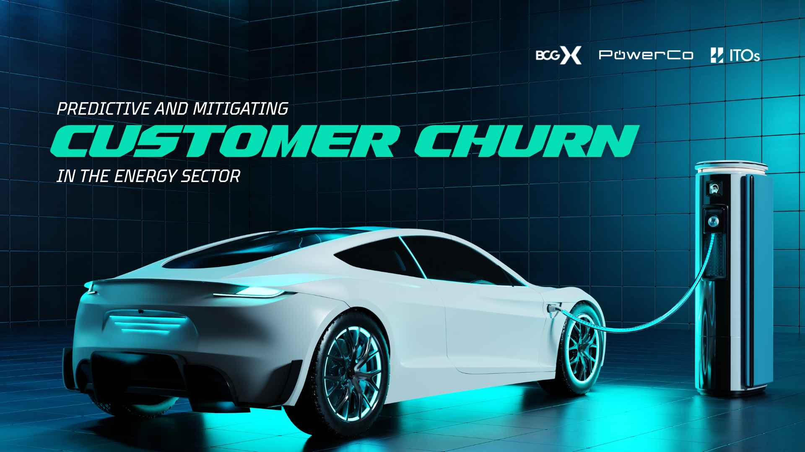
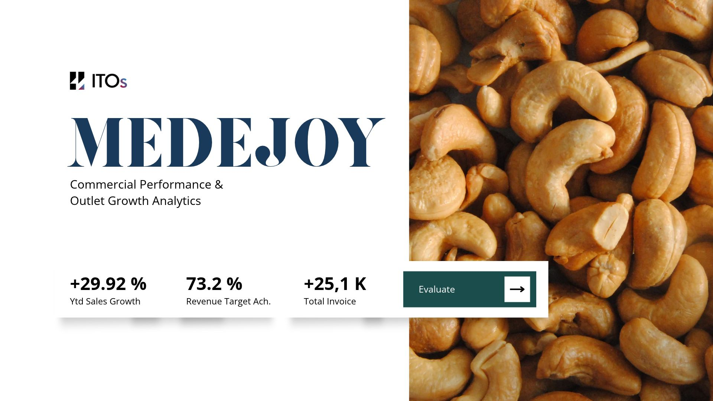

Explore Portfolio
ALL PROJECTS

Predicting British Airways Flight Booking Conversions Using Machine Learning
Menganalisis perilaku pemesanan pelanggan maskapai penerbangan untuk mengoptimalkan pendapatan dan mengidentifikasi faktor penentu konversi transaksi.

Evaluasi Kebijakan Kemensos RI Lewat Aspect-Based Sentiment Analysis (ABSA)
Memetakan aduan publik dari TikTok dan YouTube terkait kebijakan Kementerian Sosial menggunakan model transformer IndoRoBERTa.

Predicting and Mitigating Customer Churn in the Energy Sector
MBuilt a machine learning customer churn prediction model using the PowerCo energy sector dataset and Random Forest classification to help identify at-risk customers and proactively mitigate contract cancellations.

Commercial Performance & Outlet Growth Analytics
Executive Tableau Dashboard for processing 1.28 million FMCG transactions, monitoring General Trade (GT) outlet penetration, and evaluating SKU launches.